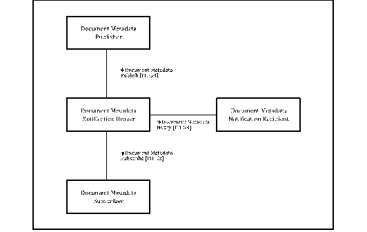
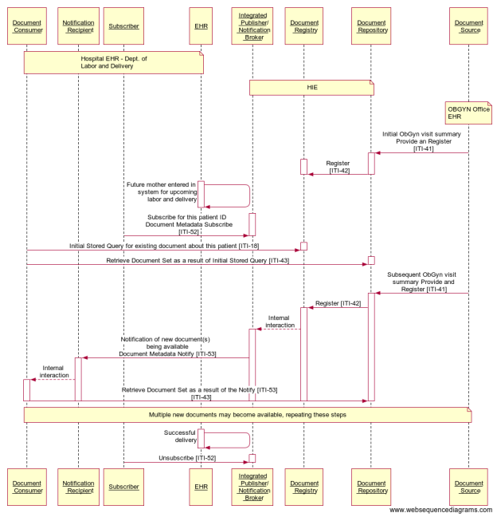

IHE IT Infrastructure (ITI)
Technical Framework
Revision 16.0 – Final Text
This profile describes the use of subscription and notification mechanism for use within an XDS Affinity Domain and across communities. The subscription allows for the matching of metadata during the publication of a new document for a given patient, and results in the delivery of a notification. This profile is based on the OASIS WS-BaseNotification standard and defines a “Push-style” method for notification. Using a “Push-style” method of notification, the Document Metadata Subscriber may subscribe on behalf of the Document Metadata Notification Recipient to receive notifications about the availability of documents based on specific criteria. A Document Metadata Notification Broker keeps track of the subscriptions and sends the appropriate notifications based on the registration of objects in an XDS Document Registry. Subscriptions exist for a certain period of time and can be cancelled.
Figure 26.1-1 shows the actors directly involved in the Document Metadata Subscription Integration Profile and the relevant transactions between them. Other actors that may be indirectly involved due to their participation in the XDS Integration Profile, etc. are not necessarily shown.
Figure 26.1-1: Document Metadata Subscription Actor Diagram
Table 26.1-1 lists the transactions for each actor directly involved in the Document Metadata Subscription Profile. In order to claim support of this Integration Profile, an implementation must perform the required transactions (labeled “R”). Transactions labeled “O” are optional. A complete list of options defined by this Integration Profile and that implementations may choose to support is listed in Section 26.2.
Table 26.1-1: Document Metadata Subscription Integration Profile - Actors and Transactions
| Actors | Transactions | Optionality | Reference |
|
Document Metadata Notification Broker |
Document Metadata Subscribe [ITI-52] |
R |
|
|
Document Metadata Notify [ITI-53] |
R |
||
|
Document Metadata Publish [ITI-54] |
O |
||
|
Document Metadata Subscriber |
Document Metadata Subscribe [ITI-52] |
R |
|
|
Document Metadata Publisher |
Document Metadata Publish [ITI-54] |
R |
|
|
Document Metadata Notification Recipient |
Document Metadata Notify [ITI-53] |
R |
Most requirements are documented in Transactions (Volume 2). This section documents any additional requirements on profile’s actors
The Document Metadata Notification Broker is the receiver of the Document Metadata Subscribe transaction containing a subscription request, or a subscription cancellation. It keeps track of all subscriptions it receives, including the time limits of subscriptions. Based on the metadata associated with document registrations, this actor sends notifications to interested subscribers. This actor may optionally receive Document Metadata Publish transactions representing the stream of events against which the existing subscriptions are matched.
The Document Metadata Subscriber initiates and terminates subscriptions on behalf of a Document Metadata Notification Recipient.
The Document Metadata Publisher sends a Document Metadata Publish transaction to the Document Metadata Notification Broker when an event occurs for which a subscription may exist. This profile does not specify how the Document Metadata Publisher becomes aware of those events.
The Document Metadata Notification Recipient receives the notification about an event, when the subscription filters specified for this Document Metadata Notification Recipient are satisfied.
Options that may be selected for this Integration Profile are listed in the Table 26.2-1 along with the actors to which they apply. Dependencies between options when applicable are specified in notes.
Table 26.2-1: Document Metadata Subscription - Actors and Options
|
Actor |
Option Name |
Vol. & Section |
|
Document Metadata Notification Broker |
Document Metadata Publish Recipient |
|
|
Document Metadata Subscriber |
No options defined |
- - |
|
Document Metadata Publisher |
No options defined |
- - |
|
Document Metadata Notification Recipient |
No options defined |
- - |
The Document Metadata Notification Broker that supports this option shall accept and process Document Metadata Publish transactions.
An actor from this profile (Column 1) shall implement all of the required transactions and/or content modules in this profile in addition to all of the transactions required for the grouped actor (Column 2).
Table 26.3-1: DSUB - Required Actor Groupings
| DSUB Actor | Profile/Actor to be grouped with | Reference |
|
Document Metadata Notification Broker |
ATNA / Secure Node or Secure Application |
|
|
CT / Time Client |
||
|
Document Metadata Subscriber |
ATNA / Secure Node or Secure Application |
|
|
CT / Time Client |
||
|
Document Metadata Publisher |
ATNA / Secure Node or Secure Application |
|
|
CT / Time Client |
||
|
Document Metadata Notification Recipient |
ATNA / Secure Node or Secure Application |
|
|
CT / Time Client |
This profile describes the use of subscription and notification mechanisms for use within an XDS Affinity Domain and across communities. The subscription allows for the matching of metadata during the publication of a new document for a given patient, and results in the delivery of a notification.
If a system can implement the Document Metadata Notification Recipient, it can be directly notified using a push-style method.
A patient in the emergency department has all her relevant available documents retrieved via XDS transactions. As initial triage of the patient is done, an additional document regarding diagnostic results for this patient is registered in the XDS Document Registry. Currently, there is no way for the Emergency department to learn about the existence of this new information. With a publish/subscribe infrastructure, the initial query to the XDS Document Registry would be accompanied with a subscription request, as a result of which a notification would be sent to the emergency department. The subscription will be terminated once the patient is no longer under the care of the emergency department's institution.
Figure 26.4.2.1.2-1: Interaction Diagram for Unexpected Notification Use Case
|
participant "Document \n Metadata \n Publisher" as publisher participant "Document \n Metadata \n Subscriber" as subscriber participant "Document \n Metadata \n Notification \n Broker" as notificationbroker participant "Document \n Metadata \n Notification \n Recipient" as recipient subscriber->+notificationbroker:Subscribe deactivate notificationbroker publisher->+notificationbroker:Publish notificationbroker->+recipient:Notify deactivate notificationbroker deactivate recipient publisher->+notificationbroker:Publish notificationbroker->+recipient:Notify deactivate notificationbroker deactivate recipient subscriber->+notificationbroker:Unsubscribe deactivate notificationbroker publisher->+notificationbroker:Publish deactivate notificationbroker |
Figure 26.4.2.1.2-2: Websequence diagrams code related to Figure 26.4.2.1.2-1
A patient visits his PCP after being discharged from a hospital that belongs to the same XDS Affinity Domain as the provider's organization. The provider sends a query to the XDS Document Registry, and retrieves the hospital discharge summary. The patient also has follow-up visits with a specialist at the hospital, and these visit summaries (including diagnostic test results) are registered in the XDS Document Registry. Currently, the PCP would have to periodically query the Document Registry for documents about the patient in order to retrieve the follow-up visit summaries. With a publish/subscribe infrastructure, the PCP would have a subscription for all his patients, so that notifications would have been received as the summaries were registered in the XDS Document Registry.
Figure 26.4.2.2.2-1: Interaction Diagram for Long-term Subscription Use Case
|
participant "Document \n Metadata \n Publisher" as publisher participant "Document \n Metadata \n Subscriber" as subscriber participant "Document \n Metadata \n Notification \n Broker" as notificationbroker participant "Document \n Metadata \n Notification \n Recipient" as recipient subscriber->+notificationbroker:Subscribe deactivate notificationbroker publisher->+notificationbroker:Publish notificationbroker->+recipient:Notify deactivate notificationbroker deactivate recipient publisher->+notificationbroker:Publish notificationbroker->+recipient:Notify deactivate notificationbroker deactivate recipient |
Figure 26.4.2.2.2-2: Websequence diagram code related to Figure 26.4.2.2.2-1
From the set of Antepartum Record Profiles in the PCC domain:
|
During the 40 weeks of a typical pregnancy duration, the patient will have an initial History and Physical Examination, followed by repetitive office visits with multiple laboratory studies, imaging (usually ultrasound) studies, and serial physical examinations with recordings of vital signs, fundal height, and the fetal heart rate. As the patient is seen over a finite period in the office, aggregation of specific relevant data important to the evaluation of the obstetric patient upon presentation to Labor and Delivery is captured on paper forms. The antepartum documents contain the most critical information needed including the ongoing Medical Diagnoses, the Estimated Due Date, outcomes of any prior pregnancies, serial visit data on the appropriate growth of the uterus and assessments of fetal well-being, authorizations, laboratory and imaging studies. This data must all be presented and evaluated upon entry to the Labor and Delivery Suite to ensure optimal care for the patient and the fetus. |
The ability of the PCC Content Consumer to establish a subscription for the updates to the antepartum documents for a given expectant mother will enhance the ability to automate the delivery of the information in a timely manner.
The following diagram illustrates the process flow within an XDS Affinity Domain reflecting the use case presented in Section 26.4.2.3.1:

Figure 26.4.2.3.2-1: Interaction diagram for Long-term Subscription Use Case
|
participant "Document \n Consumer" as consumer participant "Notification \n Recipient" as recipient participant "Subscriber" as subscriber participant "EHR" as ehr participant "Integrated \n Publisher/ \n Notification \n Broker" as notificationbroker participant "Document \n Registry" as registry participant "Document \n Repository" as repository participant "Document \n Source" as source note over consumer, recipient, subscriber,ehr: Hospital EHR - Dept. of Labor and Delivery end note note over notificationbroker, registry, repository: HIE end note note over source: OBGYN Office EHR end note source->+repository:Initial ObGyn visit summary \n Provide an Register \n [ITI-41] repository->+registry:Register \n [ITI-42] deactivate repository deactivate registry ehr->+ehr:Future mother entered in \n system for upcoming \n labor and delivery deactivate ehr subscriber->+notificationbroker:Subscribe for this patient ID \n Document Metadata Subscribe \n [ITI-52] deactivate notificationbroker consumer->+registry:Initial Stored Query for existing document about this patient [ITI-18] deactivate registry consumer->+repository:Retrieve Document Set as a result of Initial Stored Query [ITI-43] deactivate repository source->+repository:Subsequent ObGyn visit \n summary Provide and \n Register [ITI-41] repository->+registry:Register [ITI-42] registry-->+notificationbroker:Internal \n interaction notificationbroker->+recipient:Notification of new document(s) \n being available \n Document Metadata Notify [ITI-53] recipient-->+consumer:Internal \n interaction consumer->repository:Retrieve Document Set as a result of the Notify [ITI-53] \n [ITI-43] deactivate repository deactivate registry deactivate notificationbroker deactivate recipient deactivate consumer note over consumer, recipient, subscriber, EHR, notificationbroker, registry, repository, source Multiple new documents may become available, repeating these steps end note ehr->+ehr:Successful \n delivery deactivate ehr subscriber->+notificationbroker:Unsubscribe [ITI-52] deactivate notificationbroker |
Figure 26.4.2.3.2-2: Websequence diagram code related to Figure 26.4.2.3.2-1
The above interaction diagram is showing a grouping of a Document Consumer, a Document Metadata Notification Recipient, and a Document Metadata Subscriber on one side, and a grouping of a Document Registry, a Document Repository and an Integrated Document Metadata Publisher/Notification Broker on the other side. The emphasized transactions are described in this profile, while the interactions with the grouped XDS actors are also shown. Note that the grouping presented here is not required.
In this use case, a system desires to subscribe to a submissionSet with a specific intended recipient of clinical information. A source of clinical content can identify the intended target for a submissionSet using the XDSSubmissionSet.IntendedRecipient metadata attribute.
Dr. Brown is a clinician and can request exams for many patients. His system can create a subscription for documents produced that are intended for him (the subscription created has the intendedRecipient as filter parameter).
Mr. White attends a consultation with Dr. Brown, who requests a Laboratory Report for the patient. The EMR system creates a subscription with an intendedRecipient of Dr. Brown.
The patient receives the exam in a Clinical Laboratory. The Laboratory Information System produces a report and submits the document in the Document Sharing Infrastructure identifying Dr. Brown as intendedRecipient for the submission. This publishing event matches the existing subscription and a notification is sent by the Document Metadata Notification Broker to Dr. Brown’s system (identified as Document Metadata Notification Recipient in the subscription created). Dr. Brown can quickly analyze the report published and can make other clinical decisions in an efficient way.
Figure 26.4.2.4.2-1: Interaction Diagram for IntendedRecipient subscription
|
participant "Document \n Metadata \n Subscriber" as subscriber participant "Document \n Metadata \n Notification \n Recipient" as recipient participant "Document \n Consumer" as consumer participant "Document \n Source" as source participant "Integrated \n Publisher/ \n Notification \n Broker" as notificationbroker participant "XDS \n Document \n Registry" as registry participant "XDS \n Document \n Repository" as repository note over subscriber, recipient, consumer: Clinician EMR end note note over source: Laboratory \n Information \n System end note note over notificationbroker, registry, repository: RHIO end note subscriber->+notificationbroker:Document Metadata Subscribe [ITI-52] \n Parameters: PatientID=Mr.White, intendedRecipient=Dr.Brown deactivate notificationbroker source->+repository:Provide and Register Document Set-b [ITI-41] \n metadata: submissionSet.intendedRecipient=Dr.Brown repository->+registry:Register Document Set-b [ITI-42] registry-->+notificationbroker:Internal transaction notificationbroker->+recipient:Document Metadata Notify [ITI-53] recipient-->+consumer:Internal transaction consumer->registry:Registry Stored Query [ITI-18] consumer->repository:Retrieve Document Set-b [ITI-43] deactivate repository deactivate registry deactivate notificationbroker deactivate recipient deactivate consumer |
Figure 26.4.2.4.2-2: Websequence diagram code related to Figure 26.4.2.4.2-1
In this use case a clinician creates a subscription for a specific instance of workflow (e.g., eReferral Workflow) because he wants to be notified of any updates that occurred to the workflow. The workflow Id is stored in the metadata XDSDocumentEntry.ReferenceIdList.
Dr. Brown is a GP. He decides to refer his patient Mr. White to another healthcare provider to have a specialist’s consultation. Dr. Brown does not take part in subsequent steps of the Referral process, but he wants to be notified of any relevant progress related to the workflow. Mr. White calls the specialist, Dr. Green, to schedule the specialist consultation. Dr. Brown is notified of this event.
On the day of the visit, the patient is admitted in Dr. Green’s office. Dr. Green analyzes the referral request created by Dr. White and any useful Clinical Documents related to the request. When the visit is completed, Dr. Green publishes a report and Dr. Brown is notified of the completion of the eReferral process so that he can analyze the whole workflow and all related documents.
The eReferral process is managed and tracked by the creation of a specific Workflow Document (e.g., as defined in the IHE PCC Cross-enterprise Basic eReferral Workflow Definition Profile (XBeR-WD)). The Workflow Document has a unique fixed reference, the workflow Id, which is stored in the XDSDocumentEntry.ReferenceIdList metadata.
The GP’s system creates this Workflow Document and a related subscription that identifies the specific workflow Id as filter parameter for the creation of notifications. From this time, any update of the workflow document will result in the creation and the delivery of a notification to the GP, because the Workflow Id remains the same during the whole evolution of the workflow. For example, the scheduling phase involves the creation of a new version of the Workflow Document characterized by the same workflow Id. This scheduling event triggers the creation of a notification that is sent to the GP.
The execution of the visit involves another update of the workflow document and, as consequence, a new notification is sent to the GP.
This notification framework allows the GP to be active participant in the process started by him.
Figure 26.4.2.5.2-1: Interaction Diagram for Workflow Id subscription Use Case
|
participant "Document \n Metadata \n Subscriber \n ------------------ \n Document \n Metadata \n Notification \n Recipient" as subscriberrecipient participant "Document \n Consumer \n ------------------ \n XDW Content \n Consumer" as consumerXDW participant "Document \n Source \n (EHR)" as sourceEHR participant "XDW Content \n Creator" as XDWcreator participant "Document \n Consumer" as documentconsumer participant "XDW Content \n Updater" as XDWupdater participant "Document Source \n (HIS)" as sourceHIS participant "Document \n Repository" as documentrepository participant "Document \n Registry \n ---------------- \n Document \n Metadata \n Notification \n Broker" as registrynotificationbroker note over subscriberrecipient, consumerXDW, sourceEHR, XDWcreator Clinician EHR end note note over documentconsumer, XDWupdater, sourceHIS HIS end note note over documentrepository, registrynotificationbroker Regional EHR end note XDWcreator-->+sourceEHR:Internal Transaction sourceEHR->+documentrepository:[ITI-41] Provide and Register Document Set-b \n (WD, eReferral) documentrepository->+registrynotificationbroker:[ITI-42] Register Document Set-b subscriberrecipient->registrynotificationbroker:[ITI-52] Document Metadata Subscribe ($DocumentEntryReferenceIdList=workflow Id) deactivate sourceEHR deactivate documentrepository deactivate registrynotificationbroker XDWupdater-->+sourceHIS:Internal Transaction sourceHIS->+documentrepository:[ITI-41] Provide and Register \n Document Set-b \n (WD, Report) documentrepository->+registrynotificationbroker:[ITI-42] Register Document Set-b registrynotificationbroker->+subscriberrecipient:[ITI-53] Document Metadata Notify deactivate sourceHIS deactivate documentrepository deactivate registrynotificationbroker deactivate subscriberrecipient consumerXDW->+registrynotificationbroker:[ITI-18] Registry Stored Query (FindDocumentsByReferenceId) deactivate registrynotificationbroker consumerXDW->+documentrepository:[ITI-43] Retrieve Document Set-b deactivate documentrepository consumerXDW->+registrynotificationbroker:[ITI-18] Registry Stored Query (GetDocuments) deactivate registrynotificationbroker consumerXDW->+documentrepository:[ITI-43] Retrieve Document Set-b deactivate documentrepository |
Figure 26.4.2.5.2-2: Websequence diagram code related to Figure 26.4.2.5.2-1
The risk analysis for this profile enumerates assets, threats, and mitigations. The risk assessment spreadsheet is stored and available from IHE at . http://wiki.ihe.net/images/4/46/DSUB_risk_assesment.xls
The purpose of this risk assessment is to notify implementers of some of the risks that they need to consider in implementing DSUB actors. For general IHE risks and threats please see ITI TF-1: Appendix L. The implementers are also advised that many risks cannot be mitigated by the IHE profile and instead the responsibility for mitigation is transferred to the implementer, and occasionally to the XDS Affinity Domain and enterprises. In these instances, IHE’s responsibility to notify affected parties is fulfilled through the following section.
A policy decision can be made during the Subscribe transaction, whether the subscription is an authorized subscription and whether a notification/type of notification is authorized. (This could be based on the XUA identity, the consumer address value, etc.)
This profile does not include the solution to changes of policy between the subscribe time and notify time (which can be substantial). The recommendation is that the policy is enforced conservatively (i.e., the length of subscription can be determined by the Document Metadata Notification Broker). An approach allows the access of content published in accordance to consent given by the patient. The consent is dynamic and can change during time. The availability of content can be discovered only asking the document-sharing infrastructure. The creation of subscription is not dependent to access policies rules. If the Document Metadata Notification Broker sends the references, then the control of access policies is in query/retrieve transactions of the Document Metadata Notification Recipient.
Specific security considerations are presented in the Security Considerations section of each transaction in Volume 2.
Within an XDS Affinity Domain: